Elementos de Un altar para el dia de muertos
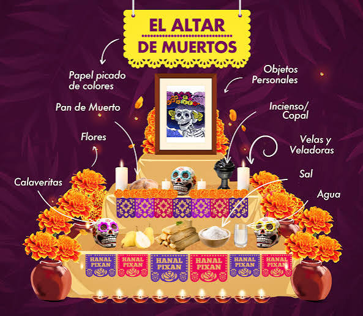
Fotografía del difunto: Se coloca en la parte superior del altar para honrar a la persona a quien se dedica la ofrenda.
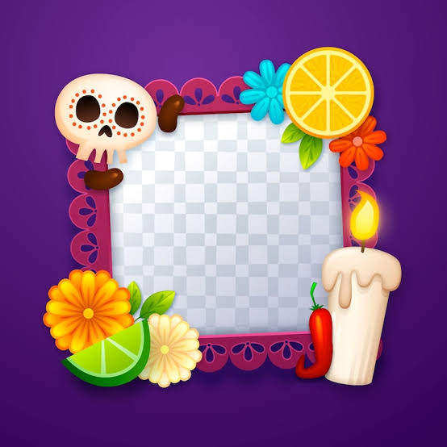
Flor de cempasúchil: Su color naranja brillante y aroma ayudan a guiar a las almas hacia el altar (también se usan pétalos para hacer un camino).
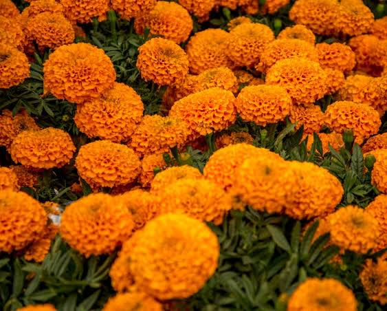
Velas y veladoras: Su luz ilumina y guía el camino de las ánimas de regreso a casa.
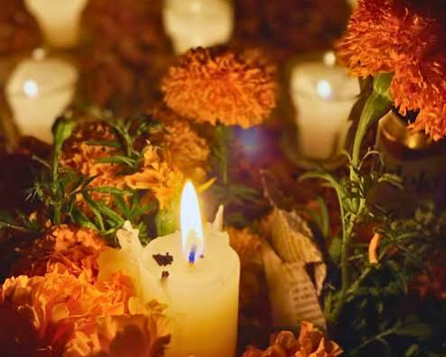
Agua: Se ofrece para calmar la sed de las almas después de su largo viaje.
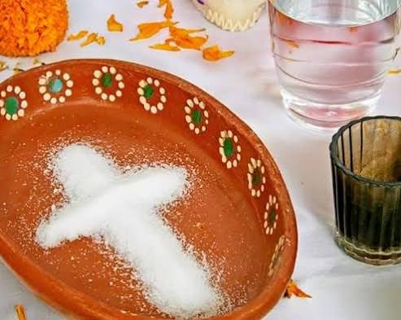
Sal: Funciona como un elemento de purificación para evitar que el cuerpo o el espíritu se corrompa en el trayecto.
Copal e incienso: Su humo limpia el lugar de malos espíritus y permite que las almas entren sin peligro.
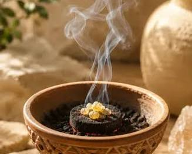
Pan de muerto: Representa la fraternidad, la generosidad de la tierra y el ciclo de la vida y la muerte.
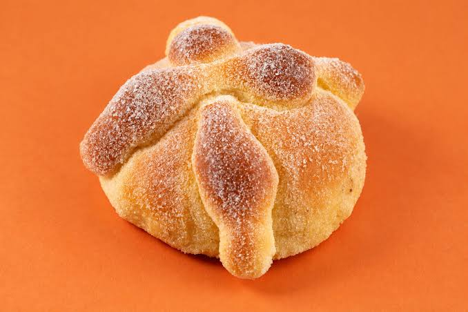
Comida y bebida: Se colocan los platillos favoritos, tamales, mole, dulces, tequila o bebidas que disfrutaba el ser querido en vida.
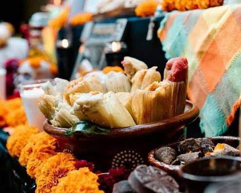
Calaveritas: Suelen ser de azúcar, chocolate o barro y representan la muerte siempre presente.
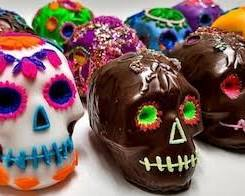
Papel picado: Aporta color y alegría y simboliza el elemento del aire.
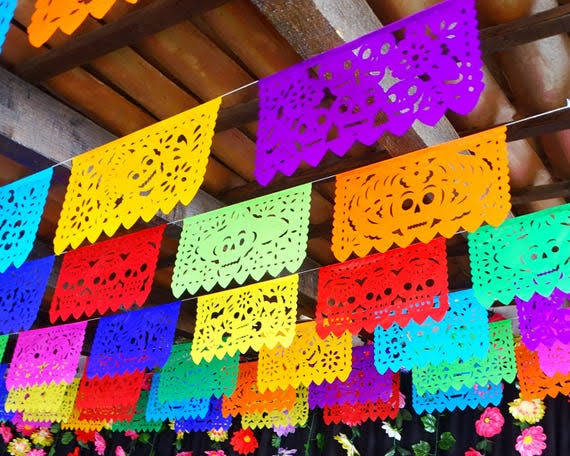
Objetos personales: Pertenencias del difunto (como juguetes para niños, instrumentos musicales o ropa) para evocar su recuerdo.
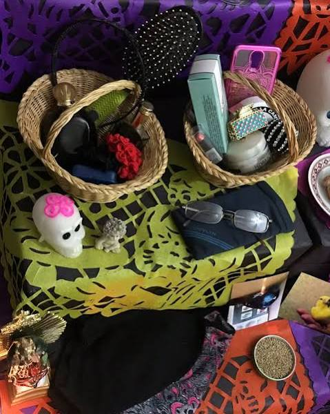